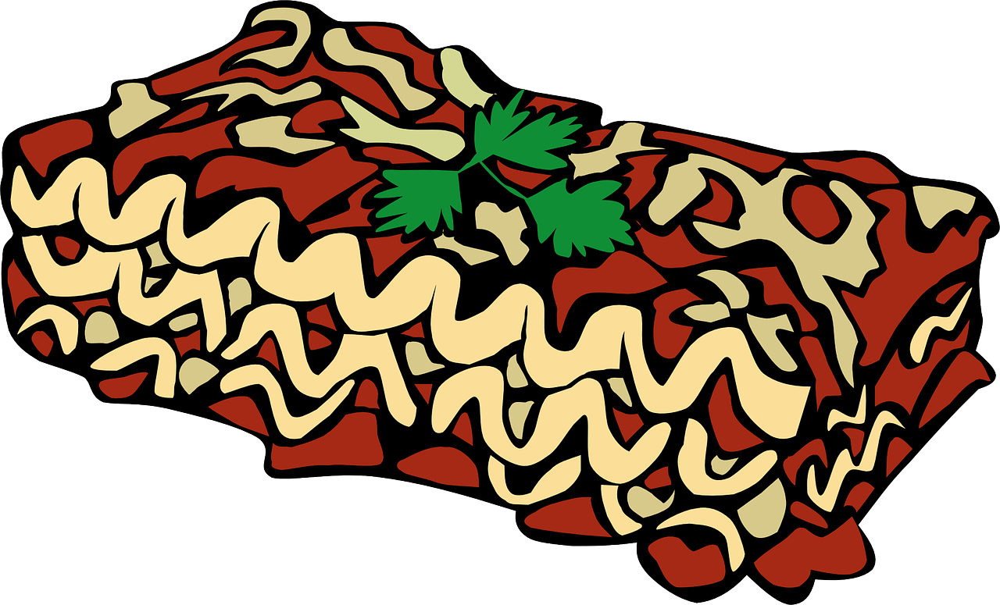

Lasagna

Meaty & Delicious
Lasagna is a hearty italian meal made by layering sauce, noodles, cheeses & meats that are then baked to create a dense & satisfying portion. A variety of recipes exist, some with no meat, or some made with mostly vegetables.
Ingredients
- 1/2 lb Ground Beef
- 1/2 lb Ground Sausage
- 1 Cup Ricotta Cheese
- 1 32oz Jar Meat Sauce
- 3 Cups Shredded Mozzarella Cheese
- 1/2 Cup Grated Parmesan Cheese
- 1 Tablespoon Ground Garlic
- 1 Tablespoon Ground Parsley
- Salt & Pepper to Taste
- 2 Eggs
- 9 Lasagna Noodles
- 1/2 Cup of Water
Directions
- Boil Lasagna Noodles for 8 minutes
- Brown Beef & Sausage
- Mix Water, Eggs, Ricotta Cheese, Mozzarella Cheese, Parmesan Cheese, Garlic, Parsley, Salt & Pepper
- Pre-Heat Oven to 375F
- Layer your ingredients in a casserole dish. You should end up with 3 layers.
- Sauce
- Meat
- Noodles
- Cheese
- Bake at 375F for 1 hour.
- Let stand 10 minutes.
- Serve & Enjoy
Home